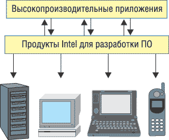

"Компания Intel, крупнейший в мире производитель микропроцессоров, является также ведущим производителем оборудования для персональных компьютеров, сетевых и коммуникационных продуктов". Эта знакомая большинству ИТ-специалистов фраза из стандартного профайла корпорации все же не очень полно отражает всю ее многогранную деятельность. В ней, в частности, ничего не говорится о том, что Intel - один из ключевых и активных игроков на мировом рынке софта. Да, корпорация получает практически весь свой доход от продажи производимого электронного "железа". Но чтобы успешно продавать свою профильную продукцию, Intel просто обязана самым серьезным образом заниматься и ПО.
Еще в конце 90-х годов на американском Intel Developer Forum в выступлении одного из руководителей Intel перед журналистами автор услышал примерно такую фразу: "Вы, наверное, удивитесь, узнав, что в Intel, в компании, бизнес которой строится на производстве микрочипов, работает программистов больше, чем в самой Microsoft. Вы даже не можете представить себе, как к многому из того, что вы получаете в виде софтверных продуктов от других разработчиков, приложили силы специалисты нашей корпорации".
Да, Intel, в общем-то, не занимается софтверным бизнесом, но при этом ведет огромный объем разработок, связанных с двумя основными направлениями - созданием экспериментальных технологий и прототипов решений, которые должны демонстрировать возможности новейших моделей микропроцессоров, и производством специализированного инструментария (компиляторы, отладчики, библиотеки функций), с помощью которого можно разрабатывать новые эффективные продукты. Иными словами, основная цель корпорации - технологическая поддержка независимых разработчиков. Так что не случайно крупнейшие мероприятия Intel - ежегодная серия конференций IDF, которая уже давно вышла за пределы США, - ориентированы именно на эту категорию ИТ-специалистов.
Что же касается России, то активно расширять здесь свою деятельность в середине 90-х годов корпорация начала именно с программы сотрудничества с создателями софта. И реализация этой линии отчетливо просматривается в развитии бизнеса Intel в нашей стране. Пять лет назад корпорация открыла свой первый научно-исследовательский центр на территории России - в Нижнем Новгороде, а сейчас в РФ действует уже пять таких центров (еще в Москве, Санкт-Петербурге, Новосибирске и Сарове). В них работает самый многочисленный коллектив - более тысячи человек - инженеров-разработчиков Intel за пределами США.
В настоящий момент в России представлены интересы научно-исследовательских подразделений шести крупных структурных групп Intel: Corporate Technology, Digital Enterprise, Information Services and Technology, Mobility, Software & Solutions и Technology & Manufacturing. Российские инженеры и ученые занимаются как исследованиями в области перспективных технологий, так и созданием конкретных инструментов. Так что для многих программных продуктов с логотипом Intel вполне годится фраза "сделано в России". Причем - впервые!
Начатая руководством Intel в 2005 г. реорганизация всей деятельности корпорации с целью ее перевода на разработку законченных технологических платформ лишь повышает роль российских сотрудников компании, занимающихся исследованиями и разработками. Так компания на практике воплощает призыв председателя совета директоров Intel Крейга Барретта "сделать информационные технологии еще одним природным ресурсом России".
Деятельность Intel в области ПО определяется общей стратегией развития архитектуры ее микропроцессоров - существенное снижение энергопотребления при значительном росте производительности. Здесь, в свою очередь, сегодня выделяются пять ключевых направлений:
- единое энергосберегающее ядро (проекты Merom, Conroe и Woodcrest);
- 64-разрядные технологии (Itanium, EM64T); EM64T
- виртуализация (Intel Virtualization Technology, iVT); VT)
- управляемость (Intel Active Management Technology, iAMT);
- многоядерность и многопоточность (Multi-Core, Hyper-Threading).
Что же касается поддержки программных платформ, то Intel, один из основателей Wintel, уже давно придерживается принципа дуализма, уделяя, помимо Windows, большое внимание развитию направления Linux. Очередной шаг был сделан весной 2005 г. - в компании было создано подразделение Open Source Program Office. В его задачу входит поддержка деловых отношений с разработчиками и поставщиками прикладного ПО для Linux. Незадолго до формирования новой софтверной группы Intel также объявила о расширении сотрудничества с производителями ПК на базе Linux.
Средства разработки Intel
Собственно софтверные продукты Intel представлены набором инструментов для разработчиков ПО, с помощью которых можно создавать высокоэффективные приложения делового и домашнего назначения (см. рисунок). Этот комплект решений состоит из пяти групп: Compilers (компиляторы), VTune Analyzers (анализаторы производительности), Performance Libraries (библиотеки функций), Threading Tools (инструменты поддержки многопоточности) и Cluster Tools (инструменты поддержки кластеров).
|  | Инструменты разработки Intel обеспечивают эффективное использование возможностей современного компьютерного оборудования. |
Компиляторы Intel реализованы для двух языков программирования - C++ и Fortran и представлены для платформ Windows и Linux, 32- и 64-разрядных систем. В начале лета 2005 г. корпорация Intel объявила о выпуске версии 9.0 этих компиляторов, помогающих создавать многопоточные приложения и в полной мере использовать возможности платформ на базе многоядерных процессоров. Эти средства включают также механизм автораспараллеливания, который автоматически ищет возможности создания нескольких потоков выполнения кода с использованием технологии Hyper-Threading и полностью поддерживает стандарт OpenMP 2.5, а также некоторые его предполагаемые будущие расширения (OpenMP - это отраслевой стандарт, упрощающий создание многопоточного ПО и управление им).
Реализованные в компиляторах инновационные технологии позволяют разработчикам отлаживать даже оптимизированный код, сгенерированный этими новыми компиляторами, что упрощает заключительные этапы создания приложений (ранее отладка оптимизированного кода была сложной или даже невозможной). Кроме того, эти инструменты поддерживают функции обеспечения безопасности на уровне приложений в средах Linux и Windows, устраняя уязвимости для атак типа "переполнение буфера". Данные функции существенно улучшают защищенность приложений C и C++, и при этом объем откомпилированного приложения увеличивается совсем ненамного. Новый комплект компиляторов Intel содержит инструменты как для 32-разрядной архитектуры с поддержкой технологии Intel EM64T, так и для архитектуры Intel Itanium.
В дополнение к этому Intel поставляет средства Code-Coverage & Test-Prioritization Tools для автоматизации тестирования создаваемого ПО.
Отдельно нужно сказать об инструментах для Fortran - языка, сохраняющего большую популярность в сфере математической обработки данных, в том числе моделирования сложных физических и природных процессов. Напомним, что в середине 90-х годов одну из ведущих позиций здесь занимали инструменты Microsoft. Но в 1997 г. Microsoft прекратила поддержку этого инструмента и передала свои технологии корпорации Digital, от которой Visual Fortran затем перешел к Compaq и далее к HP. Однако HP в 2005 г. также объявила о закрытии этого направления, передав свои разработки корпорации Intel. Таким образом, сегодня Intel стала одним из двух ведущих поставщиков компиляторов Fortran (наряду с фирмой Lahey), существенно усилив свои технологии наследством Microsoft-Digital.
Кроме того, Intel в последние годы активно развивает средства разработки мобильных приложений. Здесь у нее имеется C++ Compiler for Platform Builder (для Windows CE .NET, оптимизированной для технологии Intel XScale), набор C++ Software Development Tool Suite (для Intel XScale применительно к Palm OS, Nucleus OS, Symbian OS и другим мобильным OC), а также C++ Compiler 8.1 for QNX Neutrino RTOS.
Первые версии анализатора производительности Intel VTune Performance Analyzer появились в арсенале корпорации еще в середине 90-х годов. Этот продукт предназначен для анализа кода приложения с целью обнаружения и устранения узких мест программ в самом широком диапазоне (от уровня всей системы до уровня отдельной функции, модуля или команды в исходном коде), а также для оптимизации кода, чтобы обеспечить ему максимальную производительность практически для всех поставляемых на рынок процессоров Intel. VTune Analyzer поддерживает возможность анализа исходного кода программ, реализованного с помощью широкого круга языков программирования (C/C++, C#, VB, Fortran, Java) различных поставщиков (Borland, IBM, Intel, Microsoft, Sun) для 32- и 64-разрядных платформ Windows и Linux. Версия для Windows обеспечивает интеграцию со средой разработки Visual Studio .NET, Linux - с Eclipce.
Группа Performance Libraries представлена несколькими продуктами. Самый известный из них - Intel Math Kernel Library (MKL), куда входит широкий набор функций линейной алгебры, преобразований Фурье и векторного анализа, оптимизированных с учетом архитектурных особенностей новейших процессоров Intel. Эти средства широко применяются в инженерных, научных и финансовых расчетах. Библиотека представлена в вариантах для Windows и Linux, есть версия для кластеров Linux. Кроме того, имеются наборы Intel Integrated Performance Primitives для Linux и Windows (функции для обработки аудио, видео, графики, шифрования, распознавания речи, сигналов и т. д.), Intel Mobile Platform Software Development Kit for Windows и Intel Graphics Performance Primitives для Linux и Windows (функции 3D- и 2D-графики, оптимизированные для Intel Personal Internet Client Architecture Application Processors с поддержкой технологии Intel Wireless MMX).
Средства Intel Threading Tools - Thread Profiler и Thread Checker - появились в арсенале компании относительно недавно. Они предназначены для повышения эффективности приложения за счет распараллеливания процессов обработки и использования технологии многопоточности. Эти инструменты позволяют, в частности, выявлять потенциальные ошибки в программе еще до того, как произойдут неприятности. Для создания, анализа и оптимизации высокопроизводительных Linux-кластеров на базе систем с процессорами Intel имеются продукты Intel Cluster Tools - Cluster Toolkit, MPI (message-passing interface) Library и Trace Analyzer and Collector.
В завершение краткого обзора отметим еще, что корпорация Intel предлагает целый ряд программ поддержки независимых разработчиков ПО - Intel Software Network, Early Access Program, Intel Solution Services, которые постоянно расширяются и активно реализуются, в том числе и в России.
Акцент на многоядерные платформы11-12 октября в Москве состоялся очередной, уже четвертый по счету, московский Форум Intel для разработчиков аппаратного и программного обеспечения (Intel Developer Forum, IDF), который на этот раз прошел под лозунгом "Многоядерные платформы. Ускорим приближение будущего" (Multi-Core Platforms. Accelerate Your Future). С докладами на нем выступили представители высшего руководства и технические специалисты Intel. Среди них в связи с темой данной статьи мы выделим выступление на пленарном заседании вице-президента и генерального менеджера подразделения Software and Solutions Group корпорации Intel Ричарда Вирта (Richard Wirt). Его доклад был посвящен разработке инструментов, позволяющих создавать оптимизированные под многопоточность и многоядерность программные продукты. Отметим, что г-н Вирт имеет почетное корпоративное звание "Старший заслуженный инженер-исследователь" (Senior Intel Fellow) - такой титул носят только девять человек из 90 тыс. сотрудников Intel.
"BYTE/Россия": Как Вы можете охарактеризовать роль софтверного направления для компании Intel? Ричард Вирт: Именно софтверные разработки добавляют ценности нашим ключевым продуктам. Разумеется, мы не собираемся терять существующий сегодня фокус на постоянном совершенствовании аппаратных компонентов. Однако проектирование и разработка эффективного ПО позволяет создавать более полные решения. Мы поставляем платформенные решения, и, соответственно, стратегический фокус компании немного сместился. "BYTE/Россия": Видно, что компания очень много внимания уделяет многоядерной архитектуре и мобильным технологиям. Какие еще софтверные направления развития сейчас наиболее важны для Intel? Р. В.: Во-первых, мультимедиа. В данном направлении мы работаем уже давно, и сегодня это проявляется в области цифрового дома. Во-вторых, для нас очень важны мобильные коммуникации, чтобы упростить связь между разными устройствами, например, ноутбуком и мобильным телефоном. Сегодня мы вынуждены использовать промежуточный сервер. Но почему бы нам напрямую не соединиться так, чтобы я мог воспользоваться клавиатурой ноутбука, а ее вывод был перенаправлен на телефон? Еще одна очень актуальная задача - снижение энергопотребления в мобильных устройствах. "BYTE/Россия": Как, на Ваш взгляд, изменится процесс разработки в результате перехода на многоядерную архитектуру? Р. В.: Прежде всего разработчики должны будут учитывать, что выполнение разных программ будет происходить параллельно (на нескольких ядрах и в нескольких потоках). Следовательно, необходимо позаботиться о защите данных каждого процесса, что особенно актуально для библиотек. Однако это уже достаточно известная проблема, решения которой давно проверены на встроенных системах. Еще один вопрос, пожалуй, - само разделение кода на потоки. В этой области существует очень много методик, которые напрямую зависят именно от кода (от реализованных в нем алгоритмов). "BYTE/Россия": Основной вес проблемы распараллеливания ляжет на плечи самых крупных разработчиков программных платформ или на конечных разработчиков? Р. В.: Думаю, что с задачей распараллеливания столкнутся и те и другие. В течение последних нескольких лет мы активно сотрудничаем со всеми основными разработчиками ПО в мире. Сейчас наша компания начинает двигаться еще и в направлении не столь крупных компаний, т. е. мы пытаемся охватить разработчиков любого масштаба, чтобы облегчить процесс перехода на многоядерную архитектуру. Для этого мы, во-первых, предоставляем совместные тренинги для разработчиков. На мой взгляд, это очень важно. Во-вторых, мы сотрудничаем с университетами. Дело в том, что во многих университетах не читаются курсы по параллельным вычислениям и методикам распараллеливания кода. Как раз сегодня мы впервые в регионе EMEA (Европа, Ближний Восток, Африка) подпишем соглашение, согласно которому наши специализированные курсы (в том числе и по обсуждаемому вопросу) будут лицензированы для использования в Саровском физико-техническом институте. "BYTE/Россия": Как Вы оцениваете готовность различных платформ разработки к использованию технологий распараллеливания? Р. В.: Java изначально включает в себя механизм распараллеливания. Правда, она обычно имеет дело с небольшим числом потоков (в среднем около четырех), и для работы с 16 или 32 процессами понадобятся специальные средства, создаваемые в том числе и нашей корпорацией. Microsoft .NET в плане поддержки параллельных потоков схожа с Java. А вот при использовании С, С++ или Fortran разработчикам приходится добавлять вручную потоки в программах, потому что эти механизмы не являются интегральной частью этих языков. Хотя и здесь многие наши компиляторы умеют автоматически распараллеливать код. Но в любом случае использование многопоточности подразумевает более высокую квалификацию разработчиков, знание ими различных методов распараллеливания. Изучение этих алгоритмов должно быть включено в университетские программы подготовки программистов. "BYTE/Россия": Будет ли получен эффект от переноса в многоядерную архитектуру приложений, которые создавались для традиционных процессоров? Р. В.: Все зависит от конкретного приложения. Если рассматривать такие задачи, как прогноз погоды, то они уже были распараллелены в прошлом для работы в больших кластерах, следовательно, могут эффективно использоваться на многоядерных процессорах. Многие программы, особенно серверные, уже сейчас разделены на потоки, но в будущем им придется использовать еще большее число потоков. Кстати, все, что мы сейчас делаем в рамках концепции цифрового дома, уже разделено на потоки и учитывает многоядерный подход. "BYTE/Россия": А что дают многоядерные процессоры по сравнению с технологией Hyper-Threading, которая также нацелена на поддержку многопоточности? Р. В.: Разница между несколькими ядрами и Hyper-Threading состоит в том, как именно используются ресурсы чипа. В Hyper-Threading есть два набора регистров, но кэш и внутреннюю шину различным потокам приходится делить между собой. Этот подход позволяет применять меньше транзисторов и добиться масштабирования порядка 30%. Больше не получается именно из-за ресурсов шины. А вот при использовании нескольких ядер ничего делить не надо. Хотя для этого приходится использовать больше транзисторов на чипе, но переход на новые технологические нормы (с 90 на 65 нм) позволяет это сделать, причем даже со снижением энергопотребления. К тому же в течение следующего года мы планируем переходить уже с 65 на 45 нм, что позволит нам удвоить число ядер. "BYTE/Россия": Многие годы деятельность Intel ассоциировалась с DOS и Windows. В последнее время видение компании заметно расширилось в плане поддержки других программных платформ. Например, всем известны усилия Intel по поддержке Linux. Однако не видно движения вашей компании в сторону поддержки платформы Java. Есть ли какие-нибудь планы в этом направлении? Р. В.: На самом деле мы очень много внимания уделяем Java. Прежде всего мы сделали две вещи. Во-первых, мы взаимодействовали с ведущими поставщиками Java-машин (IBM, BEA), чтобы оптимизировать эти средства для нашей архитектуры. Во-вторых, намного более интересны усилия в области Java для open source. Многие наши российские разработчики работают именно в этом направлении, участвуя, например, в проекте Harmony, запущенном сообществом Apache с целью создания открытой версии Java. Мы решили задействовать довольно серьезные ресурсы для того, чтобы Java работала на наших процессорах очень хорошо. Но не стоит забывать, что самой Java уже десять лет. Думаю, ее уже пора переписать, сохранив совместимость, но повысив производительность и эффективность. Сегодняшние процессоры просто стали намного быстрее. Нужно также использовать преимущества многоядерной архитектуры для повышения эффективности Java. "BYTE/Россия": А мы в ближайшее время не увидим от Intel какого-либо компилятора или виртуальной машины Java? Р. В.: Мы очень плотно сконцентрировали на Java свое внимание, в том числе на компиляторах. Думаю, Вы увидите много новинок в этом направлении в будущем. Но не забывайте, что мы уделяем не меньше внимания и платформе .NET. |
Технологии Intel для цифрового предприятия
В рамках IDF/Russia 2005 была развернута выставка передовых компьютерных и коммуникационных технологий, которая включала отдельный раздел - Digital Enterprise Zone (DEZ), тематическую площадку с экспозицией, посвященной новейшим решениям для цифрового предприятия. На ней демонстрировалось цифровое окружение современного предприятия и офиса, основанное на перспективных технологиях, платформах и компонентах Intel, а также на интегрированных решениях других лидеров ИТ-индустрии.
В рамках DEZ был представлен, в частности, программный анализатор от Calypso для Grid-решений. В режиме работы реальной Grid-системы, основанной на новейшей двухъядерной платформе Intel Xeon и на платформе Intel Itanium 2, он показал линейную зависимость между временем отклика системы и количеством процессоров, используемых для выполнения конкретной задачи.
Функциональность платформенной технологии Intel Active Management Technology (iAMT), позволяющей в значительной степени изменить подход к управлению корпоративной ИТ-инфраструктурой, была продемонстрирована на примере реальной задачи уровня предприятия. Эта технология позволяет проводить инвентаризацию программного и аппаратного обеспечения предприятия, дистанционно устранять неполадки в системе независимо от состояния ОС и системы, защитить предприятие от массированной вирусной атаки. Для демонстрации применялось ПО LANDesk, поддерживающее iAMT в режиме out of band, а также настольные ПК на базе двухъядерного процессора Intel Pentium D с двумя жесткими дисками с поддержкой Intel Matrix Storage Technology. ПК были выполнены в малом форм-факторе 6.9L BTX (Balance Technology Extended), обеспечивающем снижение стоимости эффективных офисных решений и существенно понижающем уровень шума. Подобные ПК будут доступны для цифрового офиса в 2006 г. в рамках реализации программы Intel Stable Image Platform Program.
Экспозиция DEZ также включала в себя демонстрацию функции Serial over LAN IDE Redirect, позволяющей загружать систему с удаленного устройства и запускать другую ОС или диагностическое обеспечение с целью восстановления поврежденного ПО. Данная функция работает благодаря сочетанию технологии iAMT со специальным контроллером SOL (Serial over LAN) и функцией IDE-R (IDE redirection), дающей возможность удаленно загружать систему из определенной зоны офисной сети.
Еще одна платформенная технология, Intel Virtualization Technology (iVT), позволяет нескольким виртуальным операционным средам работать на одной платформе, что и было продемонстрировано в рамках экспозиции Digital Enterprise Zone. С помощью iVT каждая клиентская часть изолируется от влияния "конкурирующих" ОС, что обеспечивает высокую эксплуатационную надежность системы без ухудшения продуктивности ее работы.
В рамках DEZ впервые в России была представлена серверная система на базе модернизированной платформы Lindenhurst и высокопроизводительного двухъядерного процессора под кодовым названием Sossaman, обладающего пониженным энергопотреблением и спроектированного для использования как в традиционных серверах, так и в блэйд-серверах, требующих высокой плотности размещения устройств. Процессор Sossaman появится на рынке в первом квартале следующего года.
Большое внимание в экспозиции Digital Enterprise Zone было уделено аппаратным и программным возможностям внедрения корпоративных сервисов - таких, как передача голоса по Интернету (VoIP) с высоким качеством. На площадке DEZ посетители смогли ознакомиться с устройствами на базе микроархитектуры Intel XScale (карманные компьютеры с гарнитурой), оптимизированными для предоставления услуги Skype VoIP.
Еще одна интересная технология в области корпоративных сервисов - софтфон SJphone для мобильных и бизнес-приложений. Программное приложение производства SJ Labs, предназначенное для передачи голоса при взаимодействии ПК-ПК и ПК-телефон, оптимизировано для использования на ноутбуках на базе технологии Intel Centrino, а также на КПК на базе микроархитектуры Intel XScale, и поддерживает H.323 и SIP, видеокодеки H.261/263, богатый набор аудиокодеков и т. д.
Кроме того, на стендах Digital Enterprise Zone представлялось тестовое ПО, например, Maxon Cinebench, позволяющее в рамках тестирования быстродействия процессора учитывать такие факторы, как наличие стандарта трехмерной графики OpenGL, многопроцессорного режима обработки и технологии Hyper-Threading.